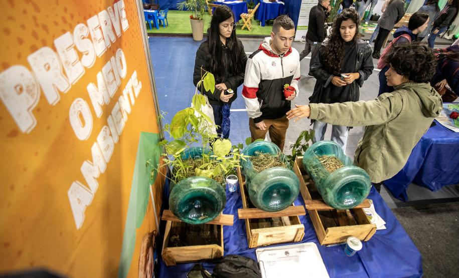
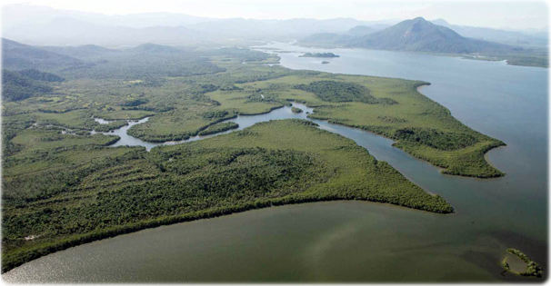

🌾 Agronegócio
O agronegócio é responsável por movimentar grande parte da economia brasileira. Em Paranaguá, a exportação de soja e milho fortalece o desenvolvimento regional e nacional.
Paranaguá possui um dos portos mais importantes da América Latina e exerce papel fundamental no agronegócio brasileiro. A cidade também abriga ecossistemas de grande importância ambiental, tornando-se exemplo dos desafios e oportunidades da sustentabilidade.
O agronegócio é responsável por movimentar grande parte da economia brasileira. Em Paranaguá, a exportação de soja e milho fortalece o desenvolvimento regional e nacional.
O Porto de Paranaguá é referência internacional em logística e exportação de grãos, conectando o Brasil aos mercados mundiais.


A Baía de Paranaguá possui manguezais, Mata Atlântica e uma biodiversidade única que deve ser preservada para as futuras gerações.
Ações de controle ambiental, monitoramento da água e investimentos em tecnologias sustentáveis demonstram que crescimento econômico e preservação podem coexistir.

Milhões de toneladas movimentadas anualmente.
Países recebem produtos exportados.
Anos de história portuária.